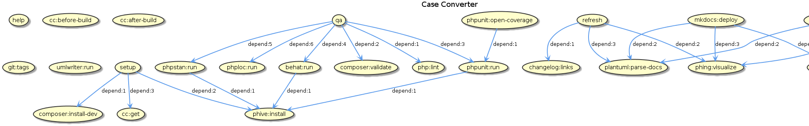

Development
Phing targets

$ phing setup: Prepare project for development.$ phing qa: Run quality tests, use this before every commit.$ phing refresh: Update generated files (changelog, images, etc).
Using proxy behind a Phing
If you are developing behind a proxy, you have to set the environment
variable http_proxy. This variable is imported in buildfile.
Conventions
This project adheres to: